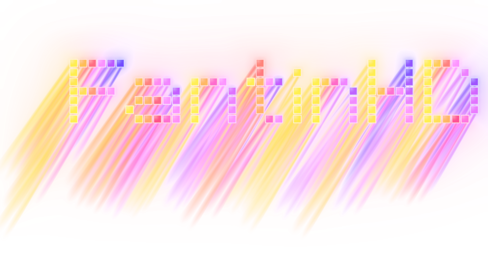

Fantin HD

Des jeux nés d'une simple idée
Mes jeux
En ce moment
Je fais mes jeux seul, du premier prototype à la mise en ligne.
Chaque projet part d'une idée simple, poussée jusqu'au bout.
Un développeur,
plusieurs mondes
Fantin HD, c'est mon nom de développeur. Je crée des jeux indépendants sur Android et je prépare mon premier jeu sur Steam, sans m'enfermer dans un genre : un jeu de dés médiéval, un jeu de nettoyage relaxant, 3 200 000 blocs à détruire, une expérience autour de l'attente et du hasard.
Farkle et Clean Glass sont déjà disponibles sur Google Play. 3 200 000 est en développement sur Android, et 2:00:00 sortira sur Steam.